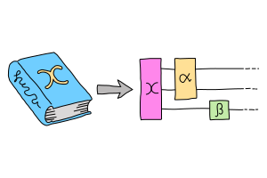
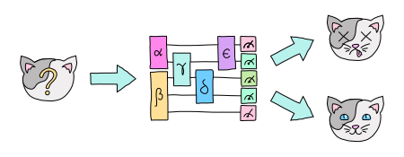

Quantum machine learning (QML) is a research area that explores the interplay of ideas from quantum computing and machine learning.
Quantum computers can help us train classical learning models faster, give us new types of models, and work directly with quantum data for which there is no effective classical representation. On the other hand, classical machine learning is a deep and well-developed field. It can inspire quantum algorithms, provide ways to classically estimate the properties of quantum systems, and gives us new ways of thinking about quantum computing.
Learning from neural networks
Deep neural networks have proven extremely successful for classical learning. Neural networks have a quantum analogue called variational circuits or sometimes quantum neural networks which, like classical neural networks, connect simple parts with parameters we can train using gradient descent. A common strategy for QML is to embed classical data into a variational circuit, train the parameters of the circuit, and terminate when some convergence criterion is met. This circuit with trained parameters is our learning model.
Variational circuits come in many flavours, such as the variational quantum classifier(VQC), variational quantum eigensolver (VQE),or variational quantum linear solver (VQLS). These are different problems, and the proposed solutions use different ansatzae for the structure of the circuit.

There are two subtleties in training these circuit models. The first is that, in computing the quantum gradient of a circuit model, we can't explicitly differentiate the quantum object, unlike a classical function. A workaround is to use something called the parameter-shift rule to implicitly compute a gradient from evaluating the circuit at different points. This scales poorly in comparison to classical backpropagation; solutions include using multiple copies of the state or reducing expressivity.
A second problem is that, however we calculate it, for many circuits the gradient tends to be exponentially small, at least if our parameters are random. This phenomenon is called a barren plateau, and it renders the model untrainable for large problem instances. This is similar in some ways to the vanishing gradients problem, but caused by the size of Hilbert space rather than the number of layers. There are many proposed solutions to barren plateaus, but also concerns that any model without such plateaus is classically simulable. This remains an open problem for QML.
Kernel of truth
Another approach to QML is to understand the learning mechanisms at play in quantum computing. For instance, when we embed classical data in Hilbert space, it acts as a higher-dimensional feature space in which we can easily perform linear classification, simply by taking measurements. The embedding is also closely tied to the expressive power of the circuit by Fourier series. It seems that all the heavy lifting is in the encoding!

Classical machine learning theory provides us with the powerful toolset of kernel learning for dealing with encoding. The basic idea is to replace direct, resource-internsive access to a higher-dimensional feature space with implicit access. The implicit access is the ability to check how two data poinst are in the higher-dimensional space; this leads to a similarity metric called the kernel, where the name "kernel learning" comes from.
When we embed (labelled) classical data in a Hilbert space, we are implicitly specifying a "quantum kernel", and the results of kernel learning apply. We can thus think of QML in terms of kernel methods, and conversely, look for ways to exploit the special kernels that quantum computers give us native access to.
Hardware from NISQ to ISQ
The success of deep learning is not just about models or algorithms; it's also about hardware. The fact that we can train large language models on internet-sized datasets is something of a miracle, but a miracle enabled by advances in processing power. For QML, this suggests we not only use the theoretical tools of quantum computing, but co-design with the hardware that is at our disposal, or will be in the near future. Full-blown universal, fault-tolerant quantum computation (FTQC) is probably many years away.
We live in an era of Noisy, Intermediate-Scale Quantum (NISQ) devices. Variational circuits are well-suited to this generation of computers. We can run them without the overhead needed for fault-tolerance, since noise is just part of the architecture; in some case, it may even be beneficial! To put the same point differently, we don't mind noise, since we don't need the circuit to do anything in particular other explore some landscape of functions in a trainable way. Checking how these small, error-prone devices actually perform on real data is a subtle and emerging art.

In the not-too-distant future, we hope these NISQ devices will be upgraded to Intermediate-Scale Quantum (ISQ) ones, which are small (hundreds of logical qubits) but fault-tolerant (gate fidelity above the error correction threshold for many layers). There is a small but emerging literature on algorithms for tasks such as energy estimation in the ISQ setting; finding useful QML algorithms remains a open problem.
Speedups and symmetries
We've looked at approaches to QML inspired by deep learning architectures, classical learning theory, and quantum hardware. But we have yet to consider the most natural source of inspiration: quantum algorithms, and in particular, those that have large (superpolynomial) speedups over classical algorithms. This include Shor's algorithm, Simon's problem and the Deutsch-Jozsa algorithm, as well as Welded Trees and the Quantum Singular Value Transform (QSVT). It's a short list, so worth studying closely!

The first three entries are all instances of a single ur-algorithm called the Hidden Subgroup Problem (HSP). The basic idea is to hide a symmetry (see below) in the labels assigned by some function. The Quantum Fourier Transform (QFT) can be used to query multiple items, attach a phase to each, and cleverly interfere them to extract the hidden symmetry. This suggests that quantum computers are good at symmetrically interfering data.
This interference can be reverse-engineered, and integrated into a "first-principles" QML model, where we leverage an existing quantum advantage to design a learning routine, rather than the reverse. And this is just one flavour of quantum speedup. Others, such as QSVT, Welded Trees, and topological data analysis, may also lead to new first-principles approaches, and form an ongoing subject of research.
The geometry of programming
We have just mentioned symmetries but haven't really explained what they are. A symmetry is a transformation which leaves an object, often a geometric object, looking the same. In quantum algorithms, the symmetries are usually associated with finite objects, so they are discrete. But in machine learning, the training landscape itself can have symmetries, and is a continuous object. In this, case the symmetries are also continuous, and we can use the mathematics of Lie algebras to describe them. Surprisingly, these tools also turn out to be relevant to the barren plateaus described above!

The language of continuous symmetries turns out to be very useful for incorporating prior information, also called inductive bias, into the learning process. The set of techniques for doing this is called Geometric QML. From the viewpoint of gradient descent, local symmetries tell us directions we can ignore, and therefore help optimize its cost.
PennyLane: the language of choice for QML research
This approach is even more general that QML. Indeed, any quantum algorithm with continuous parameters and a measure of optimality forms a landscape. This landscape may have local symmetries we can incorporate into training the algorithm. This represents an approach we call differentiable or geometric quantum programming.
PennyLane is an open-source software framework built around the concept of quantum geometric programming. It seamlessly integrates classical machine learning libraries with quantum simulators and hardware, and provides native support for parameter-shifts. It is purpose-built for training VQCs, with a wide range of datasets, as well as tools for Fourier series and kernel methods.

For more advanced researchers, there is a benchmarching suite, noise modelling for NISQ, growing support for algorithm development in ISQ, and tools for learning hidden symmetries and inductive bias. Finally, for the geometrically inclined, PennyLane implements a wide variety of continuous symmetries and knows how to optimize with them. In short, it's the language of choice for those interested in QML research!